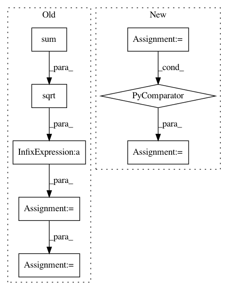

39dc6942a69a280cb6935c48c0d524d2dd2d9385,dipy/core/generalized_q_sampling.py,,triple_odf_maxima,#Any#Any#Any#,220
Before Change
indmax2, odfmax2 = equatorial_maximum(vertices,\
odf, vertices[indmax1], width)
cross12 = np.cross(vertices[indmax1],vertices[indmax2])
cross12 = cross12/np.sqrt(np.sum(cross12**2))
indmax3, odfmax3 = patch_maximum(vertices, odf, cross12, width)
return [(indmax1, odfmax1),(indmax2, odfmax2),(indmax3, odfmax3)]
After Change
indmax1 = np.argmax([odf[i] for i,v in enumerate(vertices)])
odfmax1 = odf[indmax1]
pole = vertices[indmax1]
eqvert = equatorial_zone_vertices(vertices, pole, width)
indmax2, odfmax2 = equatorial_maximum(vertices,\
odf, pole, width)
indmax3 = eqvert[np.argmin([np.abs(np.dot(vertices[indmax2],vertices[p])) for p in eqvert])]
odfmax3 = odf[indmax3]
"""
cross12 = np.cross(vertices[indmax1],vertices[indmax2])
cross12 = cross12/np.sqrt(np.sum(cross12**2))
In pattern: SUPERPATTERN
Frequency: 3
Non-data size: 8
Instances
Project Name: nipy/dipy
Commit Name: 39dc6942a69a280cb6935c48c0d524d2dd2d9385
Time: 2010-11-10
Author: iannimmosmith@gmail.com
File Name: dipy/core/generalized_q_sampling.py
Class Name:
Method Name: triple_odf_maxima
Project Name: senarvi/theanolm
Commit Name: 16d2eb3061f1bed8ade390c5e2a2c1de9daa3509
Time: 2015-12-04
Author: seppo.git@marjaniemi.com
File Name: theanolm/optimizers/basicoptimizer.py
Class Name: BasicOptimizer
Method Name: __init__
Project Name: RaRe-Technologies/gensim
Commit Name: a31eab99dfbc6dcb7fe2ef149c59a30910adbbbd
Time: 2011-05-15
Author: radimrehurek@seznam.cz
File Name: src/gensim/interfaces.py
Class Name: SimilarityABC
Method Name: __getitem__